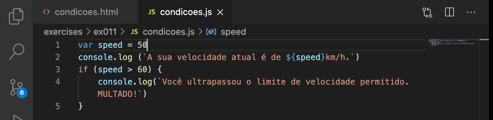
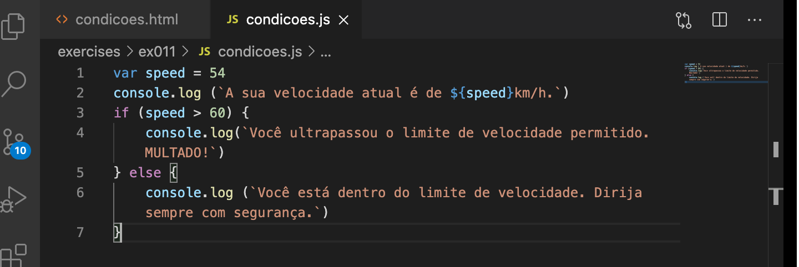

⬇
1) var n = 3
⬇ 2)
n += 2
⬇
window.alert(n)
Esses exemplos de comandos 1), 2) e 3) precisam ser executados numa sequência lógica. Aleatoriamente não rolaria. Também não dá pra omitir um dos passos.
Haverá situações em que a execução de um comando não será flúido e ininterrupto assim. Quer dizer, haverá situações em que a execução de um comando dependerá de outra circunstância. Mais claramente, haverá situações em que a execução de um comando estará CONDICIONADA à situação "tal" acontecer.
Em JavaScript as condições iniciam com o termo if. A sintaxe é tipo:
if (condição) {
bloco |
de | T R U E
ações |
} else {
bloco |
de | F A L S E
ações |
}
Basicamente o que estamos dizendo com essa estrutura acima é: SE tal coisa acontecer (que é a condição), o programa executa a ação X, SENÃO, o programa executa a ação Y.
if (condition) {
TRUE
}
Ou...
if (condition) {
TRUE
} else {
FALSE
}
Seguimos agora para o NodeJS no arquivo condicoes.js
Digamos que você está criando um programa para o departamento de trânsito da sua cidade que visa multar quem ultrapassar o limite de 60km/h. Vamos criar esse programa usando condições em JavaScript. Vontaldo pro NodeJS....
Seguimos adicionando, dessa vez, SENÃO
